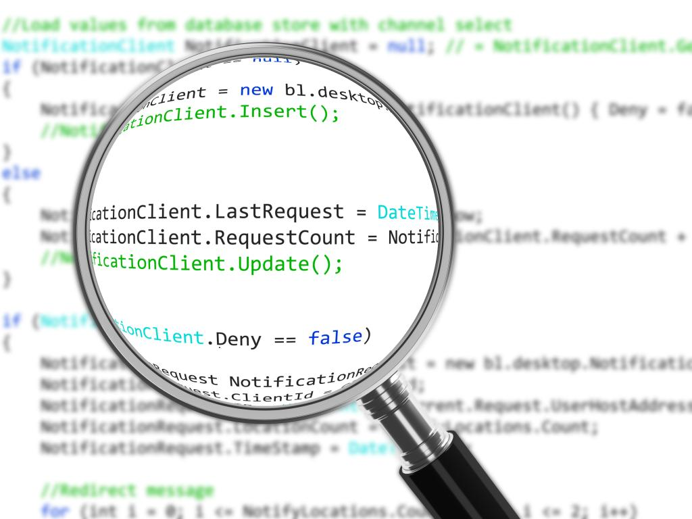

Code Review Culture
How to Foster Excellence and Accountability Among Developers
By Christopher Robison
June 19, 2018

As someone who's worn multiple hats—from developer to engineering manager—I've witnessed firsthand the power of a strong code review culture. Code reviews are not just a formality but a linchpin in building a sustainable and healthy engineering team. Here's why code review culture is essential and how you can foster excellence and accountability among developers.
The Importance of Code Review Culture
Code reviews serve multiple purposes: they catch bugs, ensure coding standards, and facilitate knowledge sharing. But beyond the technical, code reviews also have a subtle, yet profound, impact on team culture. A constructive code review process promotes trust, encourages open dialogue, and fosters a sense of collective ownership over the codebase.
Set Clear Guidelines
The first step in creating a strong code review culture is setting clear, consistent guidelines. These could range from coding standards and naming conventions to more nuanced principles like code simplicity and maintainability. Having a documented set of guidelines gives team members a common point of reference and sets the stage for constructive reviews.
Training and Onboarding
For new hires or junior developers, the code review process can be intimidating. Ease them into it by offering training sessions and including them in the review process from day one. Not only does this accelerate their learning curve, but it also instills the values of code quality and teamwork early on.
Openness to Criticism
A healthy code review culture is one where developers are open to constructive criticism. This requires a non-toxic, blame-free environment where the focus is on improving the code, not pointing fingers. It's important for team leaders to set the tone here: if you're open to feedback and demonstrate a willingness to adapt and improve, your team will likely follow suit.
Timely Feedback
The value of a code review diminishes with time. The longer you wait to review someone's code, the more context is lost, and the harder it becomes to make meaningful contributions. Strive for quick, yet thorough reviews to keep the development cycle moving and maintain high levels of engagement.
Accountability Through Metrics
Finally, it can be useful to employ metrics to gauge the effectiveness of your code review process. These could range from the time taken for code reviews, the number of issues caught, to more qualitative measures like team member satisfaction. These metrics can provide valuable insights and hold everyone accountable for maintaining the review standards.
Conclusion
Building a strong code review culture is not an overnight task. It takes effort, consistency, and a willingness to adapt and improve. However, the payoffs—in terms of code quality, team morale, and individual growth—are well worth it. By instilling a culture of excellence and accountability, you're setting your team up for long-term success.